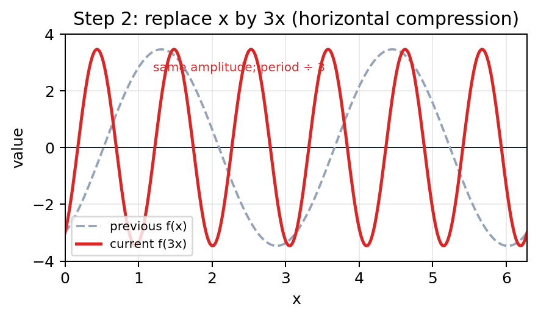

In this question you must show all stages of your working.
Solutions relying entirely on calculator technology are not acceptable.
(a) $$f(x)=\sqrt3\sin2x-3\cos2x.$$ Express $f(x)$ in the form $R\sin(2x-\alpha)$, where $R$ and $\alpha$ are constants, $$R>0\quad\text{and}\quad0<\alpha<\frac\pi2.$$ Give the exact value of $R$ and the exact value of $\alpha$. (3)
(b) $$g(x)=\frac{18}{f(3x)+4\sqrt3},\qquad x>0.$$ Using the answer to part (a),
(i) write down the exact minimum value of $g(x)$,
(ii) find the smallest value of $x$ for which this minimum value occurs.
You must make your method clear. (3)
[6 marks: (a) 3, (b)(i)–(ii) 3]
Strategy. Expand the target R-form, compare the sine and cosine coefficients, use square-and-add for exact $R$, and use their ratio plus the stated first-quadrant range for exact $\alpha$.
Why this method applies. The identity converts a linear combination of sine and cosine with the same angle into a single shifted sine. Coefficient comparison preserves exact values and makes the quadrant condition visible.
Formula or definition first. Use $R\sin(2x-\alpha)=R\cos\alpha\sin2x-R\sin\alpha\cos2x$. Therefore $R\cos\alpha=\sqrt3$ and $R\sin\alpha=3$.
Full intermediate working. Square and add: $$R^2(\cos^2\alpha+\sin^2\alpha)=3+9=12,$$ so $R=2\sqrt3$ because $R>0$. Divide the equations: $$\tan\alpha=\frac{3}{\sqrt3}=\sqrt3.$$ Since $0<\alpha<\pi/2$, $$\alpha=\frac\pi3.$$ Hence $$\boxed{f(x)=2\sqrt3\sin\left(2x-\frac\pi3\right)}.$$
Difficult transition. The difficult transition is matching the negative cosine coefficient. In the expansion it is $-R\sin\alpha$, so comparing with $-3\cos2x$ gives the positive equation $R\sin\alpha=3$.
Final check / check back. Re-expand the boxed form: $2\sqrt3(\tfrac12)\sin2x-2\sqrt3(\tfrac{\sqrt3}{2})\cos2x=\sqrt3\sin2x-3\cos2x$. The range condition confirms the chosen angle.
Strategy. Substitute $3x$ into the R-form, minimise the positive fraction by maximising its denominator, then set the sine to its first maximum and solve for the smallest positive $x$.
Why this method applies. The numerator 18 is fixed and positive, and the denominator $2\sqrt3\sin(6x-\pi/3)+4\sqrt3$ remains positive. Therefore a larger denominator produces a smaller value of $g$.
Formula or definition first. Use $-1\le\sin\theta\le1$. The maximum denominator occurs at $\sin(6x-\pi/3)=1$, where its value is $2\sqrt3+4\sqrt3=6\sqrt3$. Sine first reaches one when its angle is $\pi/2$ modulo $2\pi$.
Full intermediate working. Thus $$\min g=\frac{18}{6\sqrt3}=\frac3{\sqrt3}=\boxed{\sqrt3}.$$ For the earliest positive occurrence, solve $$6x-\frac\pi3=\frac\pi2.$$ Then $$6x=\frac{5\pi}{6},\qquad x=\boxed{\frac{5\pi}{36}}.$$ Adding $2\pi$ to the angle generates later occurrences, so the displayed value is the smallest positive one.
Difficult transition. The difficult transition is the inverse relationship: minimising a positive quotient with fixed numerator means maximising, not minimising, the denominator. A second trap is forgetting that $f(3x)$ changes $2x$ to $6x$.

Final check / check back. The sine cannot exceed one, so no denominator can exceed $6\sqrt3$ and no $g$ can be below $\sqrt3$. Substituting $x=5\pi/36$ gives angle $\pi/2$, confirming equality. The visual shows horizontal compression from $f(x)$ to $f(3x)$.